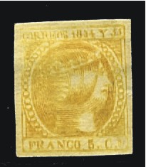
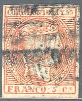
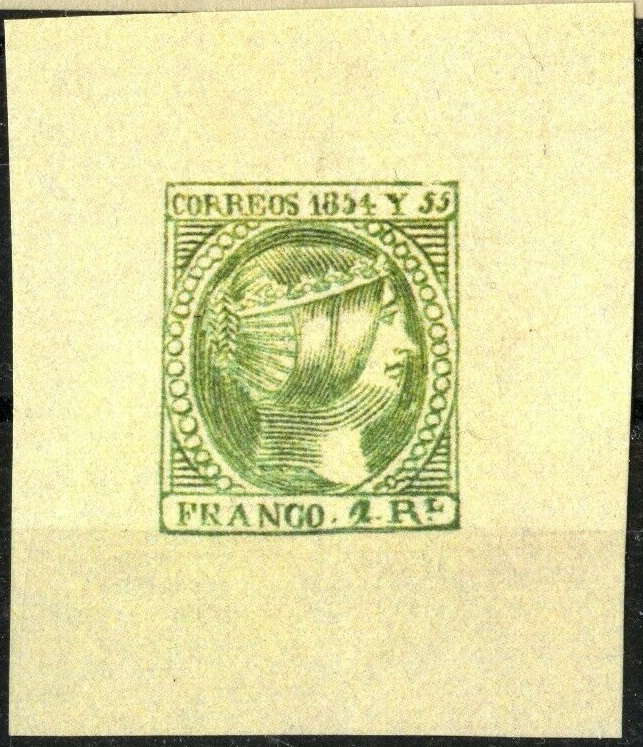
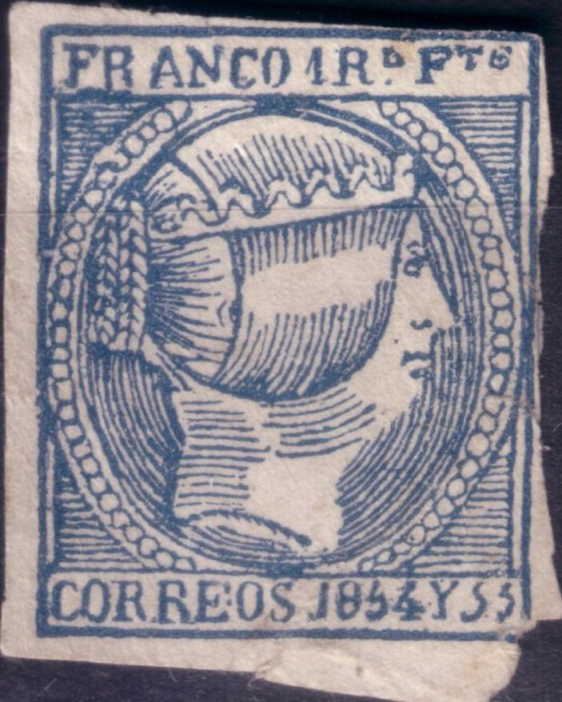
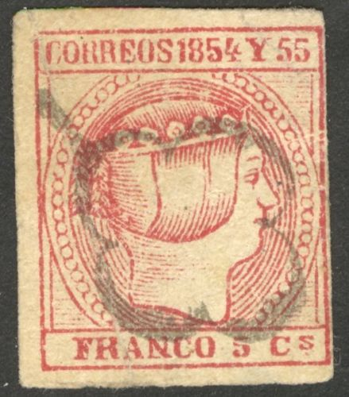
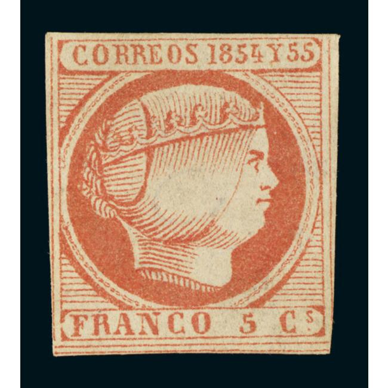

Filipinas - Philippinen
Return To Catalogue - Philippines 1859-1870 - 1871-1881 issues - 1882-1900 issues - Japanese occupation during World War II - Phillipines miscellaneous
Note: on my website many of the
pictures can not be seen! They are of course present in the
catalogue;
contact me if you want to purchase it.






5 c orange 10 c red 1 r grey (blue) 2 r green Overprinted "HABILITADO POR LA NACION" (1869)


1 r grey 2 r green
Value of the stamps |
|||
vc = very common c = common * = not so common ** = uncommon |
*** = very uncommon R = rare RR = very rare RRR = extremely rare |
||
| Value | Unused | Used | Remarks |
| 5 c | RRR | RRR | |
| 10 c | RRR | RRR | Some 10 c black proofs exist: RRR |
| 1 r | RRR | RRR | |
| 2 r | RRR | RRR | |
| 1 r and 2 r | RRR | RRR | Overprinted 'HABILITADO POR LA NACION' (1869) |
These stamps were issued with inscription "CORREOS 1853" for Spain. The 5 c were used for light interior letters (under 1/2 ounce), the 10 c for heavier ones (1/2 to 1 ounce) and the 1 r for letters between 1 and 1 1/2 ounce. The 2 r was used for registered letters. A nice website on these first issues can be found at: http://nigelgooding.co.uk/Spanish/Isabella/1854.htm. Many examples of forgeries can also be found on this website http://www.nigelgooding.co.uk/Spanish/Forgeries/Isabella/1854-5cuartos.htm.
For the specialist, the inscription "CORREOS 1854Y55" is in the top label for the 5 and 10 c, it is in the bottom label for the 1 r and 2 r. The value label is in the bottom label for the 5 and 10 c and in the top label for the other values. There are 40 types of each stamp (as many stamps as there are in the sheet; 8 rows of 5 stamps). A famous type is the "CORROS" misprint of the 1 r:


A misprint "CORROS" instead of "CORREOS"
(sheet position 26), forgeries exist of this misprint.


Circle consisting of dots and Parrilla cancel.
The 'Parrilla' cancel also is know on these stamps (an ellipse with lines and stars in the center). Also a large circle with townname (Baeza cancel) was used on these stamps.

Baeza cancel from Manila

Some other name cancel "Jusqedo Tal de Yloco.. Sur."


Fohl forgeries of the 5 c and 2 r
stamps. The 2 r with top and bottom inscription inverted. The
pearl below the 'Y' is not round but 'D'-shaped. The '5' of
'1854' is too short at the top. The 10 c also exists in this
forgery type.
The forger Engelhardt Fohl made forgeries of the 1 r and 2 r, where the inscription "CORREOS 1854Y55" is at the top instead of at the bottom. The forgeries of the other two values made by him are deceptive since they are engraved.
An extremely dangerous forgery of the 10 c was made by the forger Sperati. An image of this Sperati forgery was found on the website: http://www.nigelgooding.co.uk/Pick/2002_02.htm :


The distinghuishing characteristics of this forgery are (also obtained from the above mentioned website):
The stamp chosen by Sperati was from sheet position 33, (third stamp in the seventh row)
He also made proofs in black of this stamp. Sperati forgeries are not often met with and are quite expensive. More information on Sperti forgeries can be found in: 'The Work of Jean de Sperati' by the British Philatelic Association, 1956.

Senf forgeries of the 10 Cs and 1 R
values (first 1 R value obtained thanks to Nigel Gooding). They
were distributed with a stamp journal issued by Senf as
'Kunstbeilagen' (art supplements). In "CORREOS" the
"RE" is printed lower in the 10 c value.


Some other forgeries.

Some other primitive forgeries.
5 c red (slightly other design from the 1854 issue)
Two types exist of this stamp.
Value of the stamps |
|||
vc = very common c = common * = not so common ** = uncommon |
*** = very uncommon R = rare RR = very rare RRR = extremely rare |
||
| Value | Unused | Used | Remarks |
| 5 c | RRR | RRR | |
Forgeries, examples:
This forgery type is also listed by Nigel Gooding as forgery
#6F10, see
http://nigelgooding.co.uk/Spanish/Forgeries/isabella/1855-5cuartos1.htm

This forgery type is also listed by Nigel Gooding as forgery
#6F7, see
http://nigelgooding.co.uk/Spanish/Forgeries/isabella/1855-5cuartos1.htm
A forgery made by the forger Senf with
"FALSCH." (=forged in German) printed on it. The word
"FALSCH." is often 'cancelled' or barred.


Sperati forgery, 'Reproduction A', I've also seen an uncancelled
Sperati 'proof' on a minisheet. There is small red dot above the
"S" of "CORREOS" and a line connecting the
inner and outer frameline above the "1".

Sperati 'Reproduction B', blackprint.

Sperati's 'Reproduction B', I've also seen it with cancel.
The forger Oswald Schröder made a forgery of this stamp as well. It is pictured on the front page of the book 'The Oswald Schroder Forgeries' by Robson Lowe.

Schroeder forgery (image obtained
from Nigel Gooding). According to Nigel, the "8" is too
slanting and the "5" of the bottom inscription is too
small. The letters are slightly different. This forgery is an
imitation of position 2 on the plate.

Forgery #6F4 from Nigel Gooding's website.
For issues of the Philippines from 1859 to 1870, click here.


{kind=link}
{kind=link}
{kind=link}
{kind=link}
{kind=link}